To get a noisy training input, I linearly interpolate between Gaussian noise ε
and the clean image x1: xt = (1 − t)ε + t·x1.
t = 0 is pure noise and t = 1 is the original image, so a larger
t keeps more of the original. I used a photo I took of Washington Square Park and reused
the same noise sample for all three noise levels.
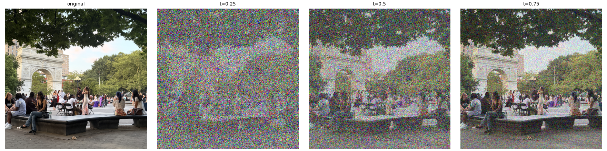
I divided each noisy input by t to restore the image's brightness, then
applied a Gaussian blur. I tested σ = 1, 2, 4, 8, 16 and kept the one with the
lowest error to the clean image, which was σ = 8, 2, and 1 for the three noise levels.
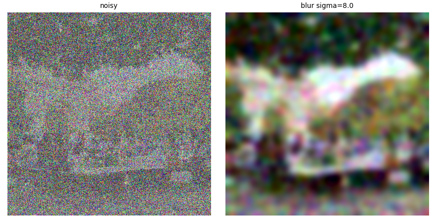
t = 0.25 (σ = 8)
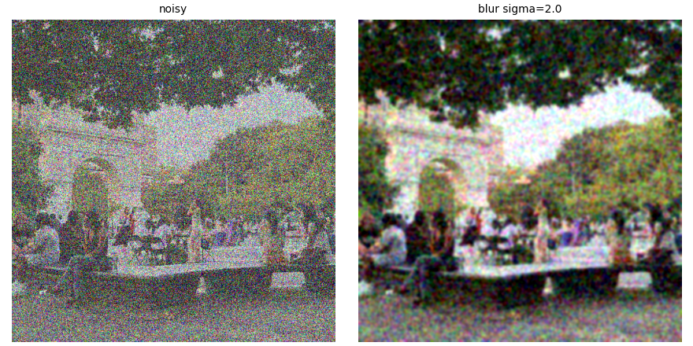
t = 0.5 (σ = 2)
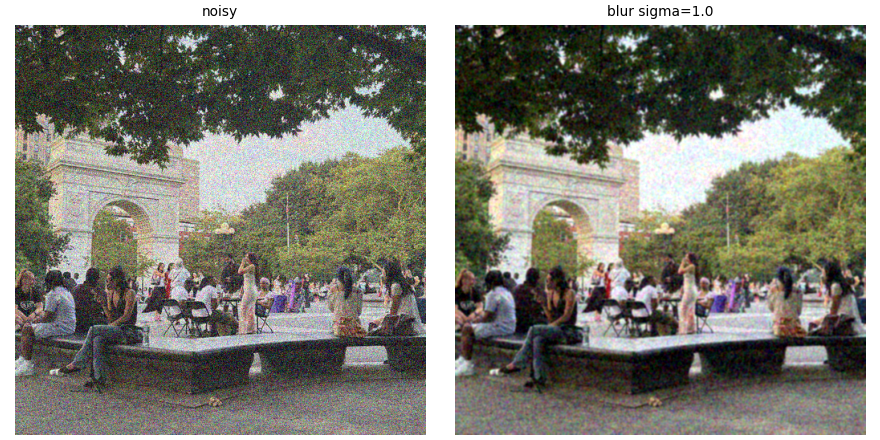
t = 0.75 (σ = 1)
At t = 0.25 there's so much noise that it took a really heavy blur to get
rid of it, and all that was left was a colorful blob. At lower noise a smaller blur was
enough, but the results were still soft and speckly, since blurring removes detail along
with the noise.
I used PixNerd with the prompt "a high quality photo" to predict the velocity once, then
estimated the clean image with
x̂1 = xt + (1 − t)·v̂.
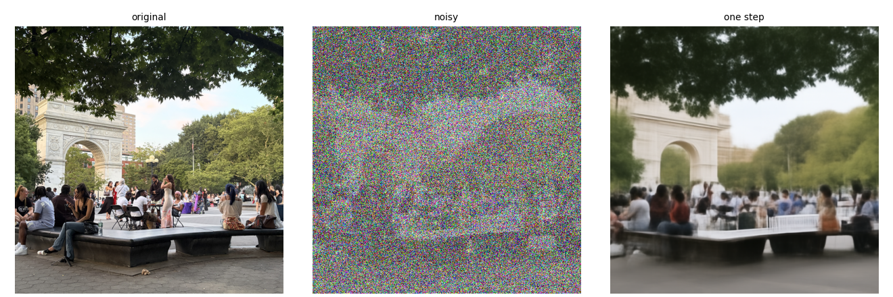
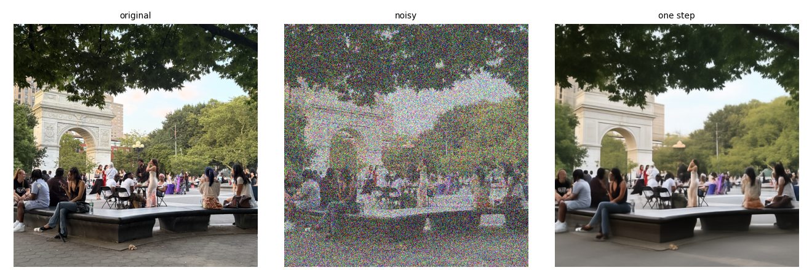
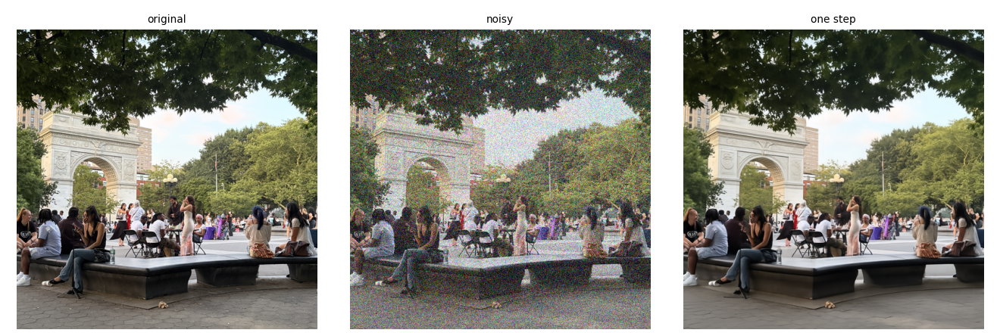
This is way better than blurring. Even at t = 0.25 the arch, trees, and
people come back, though the result is pretty smooth and painterly.
Since I know the original image and the noise, I know the exact update the model should
add: (1 − t)(x1 − ε). I compared it with the
predicted update (1 − t)v̂ and plotted the RMS difference across
RGB at each pixel. All updates share one color scale (gray = 0), and the error maps share
the same limits.
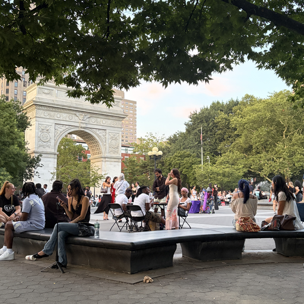
Original image
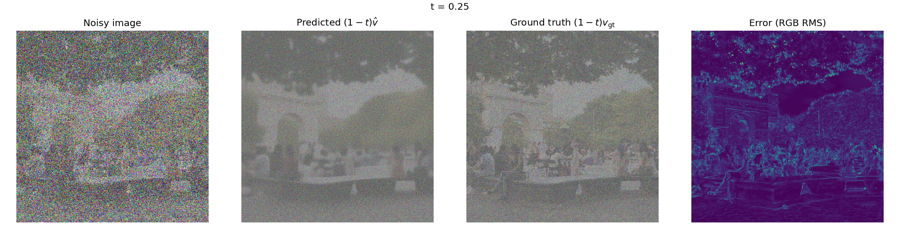
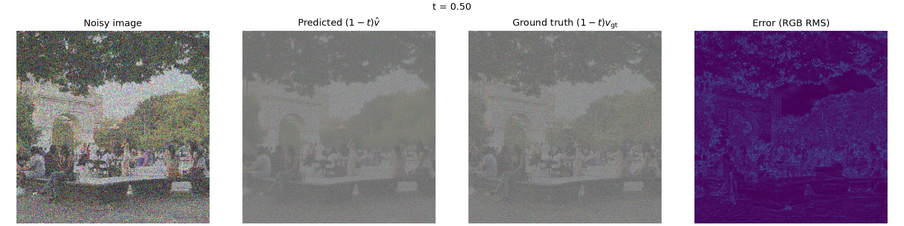
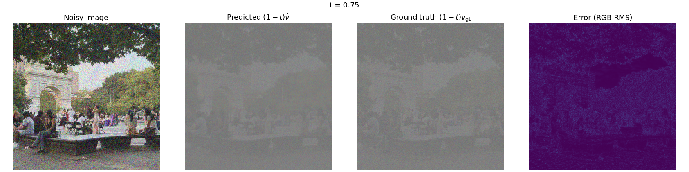
The error is biggest at t = 0.25 and fades as t increases. It shows up
mostly on fine details like the leaves, the arch's outline, and the crowd, which the
model can't know exactly, so it predicts a smoother version instead.
Instead of jumping straight to the end, Euler sampling takes small steps
(xt+h = xt + h·v(xt, t)) and
predicts a new velocity after each one. Starting from my t = 0.5 input, I took
25 steps of h = 0.02. These are the initial image, every fifth update, and the final result.
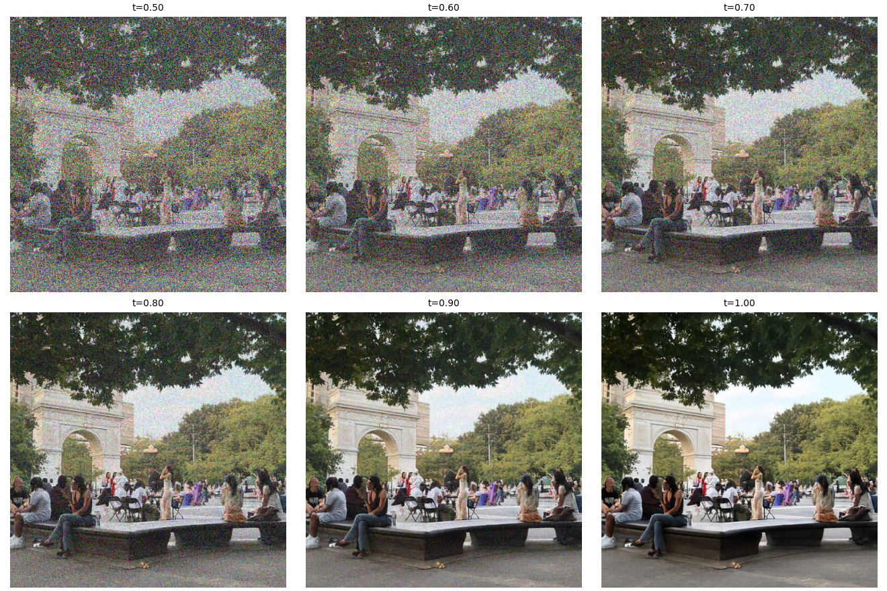
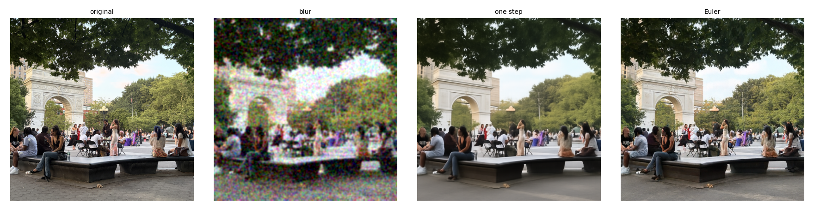
Euler looks the best by far: the leaves have real texture and the people are sharp. Interestingly, it had a slightly higher MSE than one-step (0.028 vs. 0.025, compared to 0.055 for blur). One-step predicts an average, which is blurrier but closer pixel-by-pixel, while Euler commits to one sharp image whose details don't line up exactly with the real photo.
Starting Euler sampling at t = 0 from pure noise generates an image from
scratch. These use seeds 180–184, the prompt "a high quality photo", and 50 steps.

The generic prompt mostly produces portraits, but several of them are distorted (seed 180 doesn't even have a face).
CFG runs the model twice at each step, once with the prompt and once with an empty
prompt, and pushes further in the direction the prompt adds:
vcfg = vc + w(vc − vu).
These use w = 7 and the same five noises as above.

The faces are much cleaner and more realistic, but the images are a lot less diverse. They all look like headshots from the same studio photo shoot.
I noised each image to a starting time and then sampled with CFG from there to 1, using "a high quality photo". Smaller starting times add more noise, so the model has to make up more and the edit gets bigger. All edits use starting times 0.02, 0.04, 0.06, 0.10, 0.14, 0.25, and 0.50.

It starts as a plain white obelisk, and the windows don't come back until 0.25.
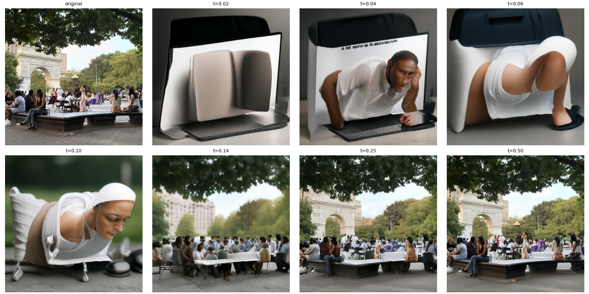
The early edits turn into a really disturbing scene with a person. The crowd shows up at 0.14, and the arch comes back at 0.25.
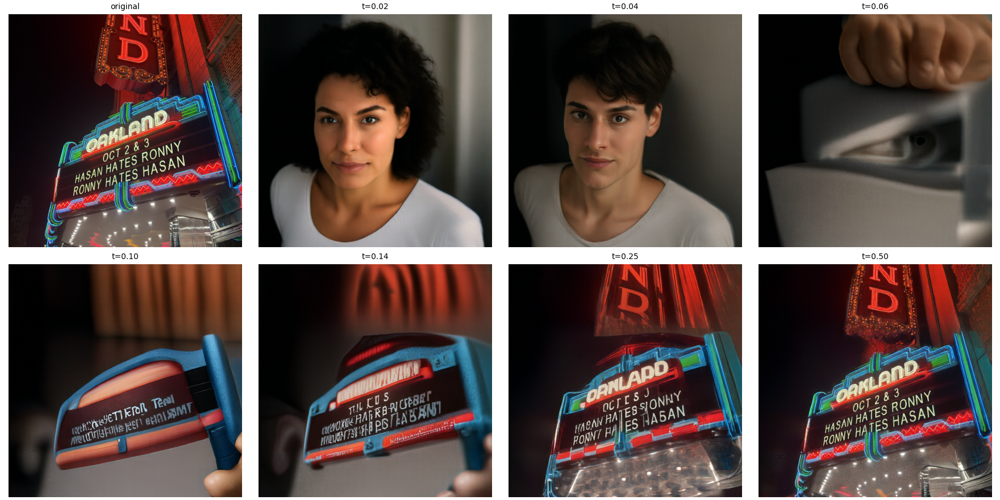
The first few are portraits. Around 0.10–0.14 the marquee becomes a hand-held sign with gibberish text, and by 0.50 the text is readable again.
I did the same thing with an image from the web and two of my own drawings. Since these aren't photos, the model tries to turn them into something realistic.
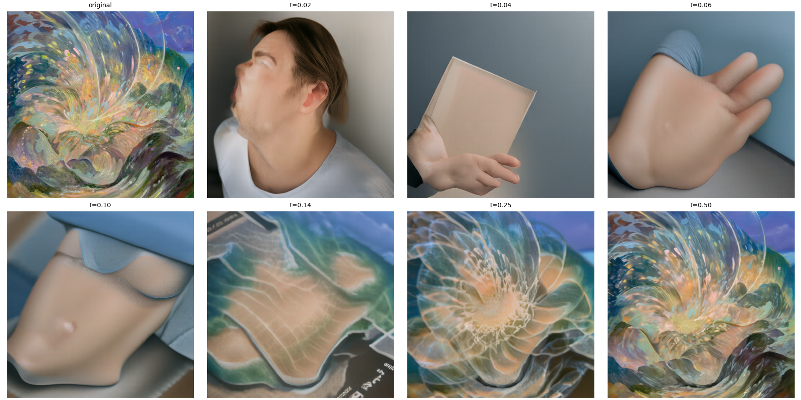
Early on only the colors survive, and it becomes a face and then hands. At 0.25 the swirl turns into a flower-like jellyfish.
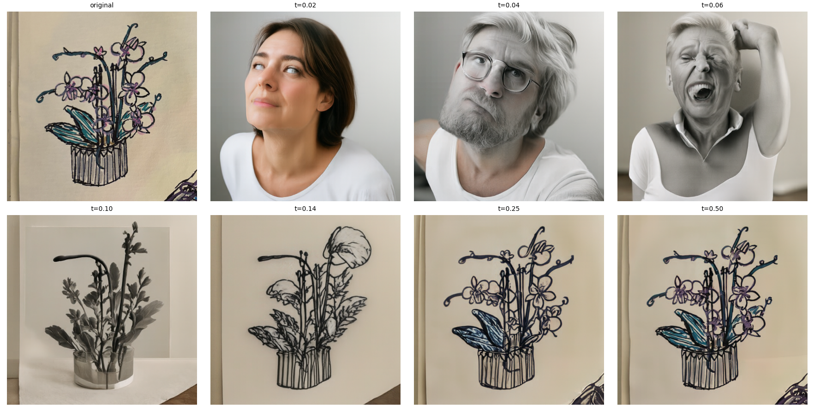
My favorite one! At 0.10 my sketch turned into an actual black-and-white photo of a plant in a vase, and by 0.25 my drawing is back.
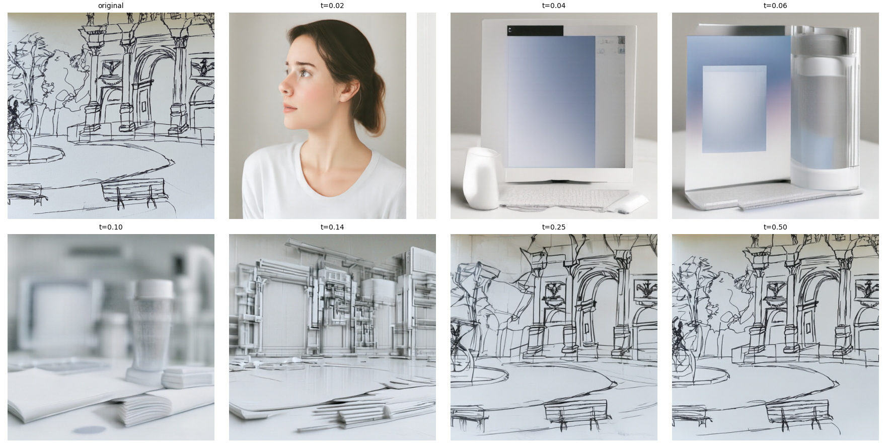
The mostly white page turned into office objects like a monitor and cup, then a 3D-rendered building at 0.14, before my sketch returns at 0.25.
Same process, but with my own prompt instead of "a high quality photo". Early starting times follow the prompt more, and later ones keep more of the original.
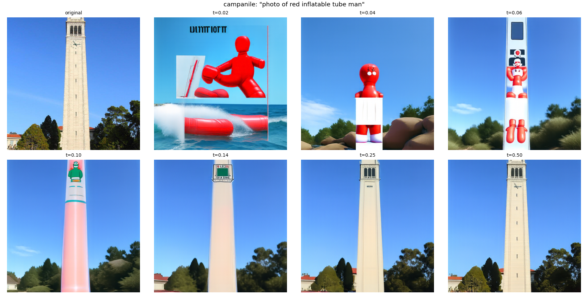
At 0.04–0.10 the tube man gets fused with the tower, and at 0.10 the whole tower becomes a pink inflatable tube.
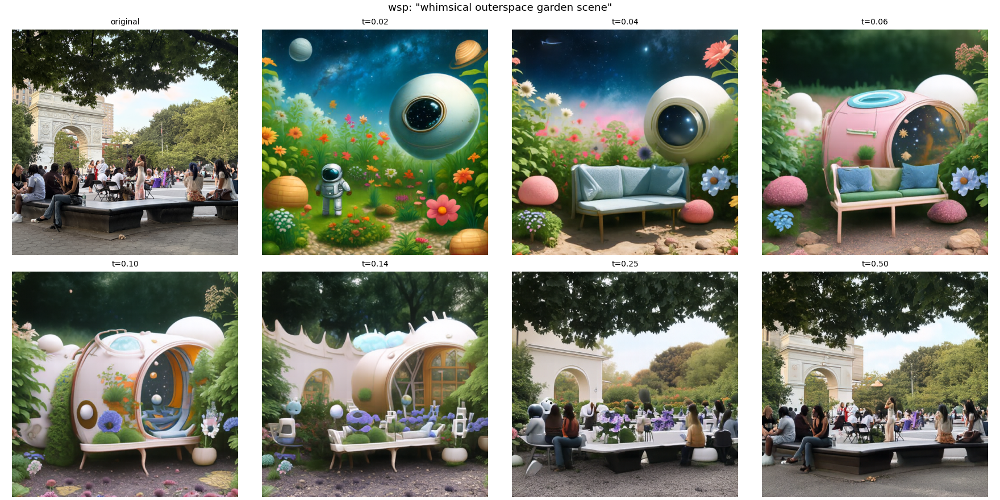
The park bench turns into a couch in front of a space-pod house, so the layout stays even though everything else changes.
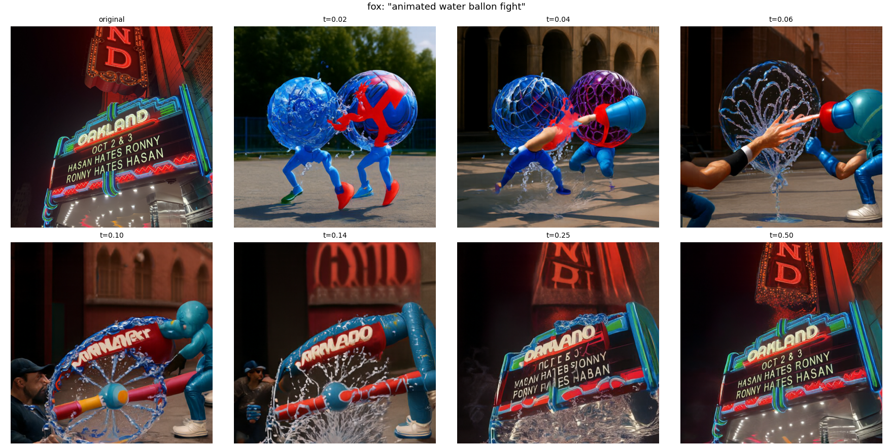
The early ones are full cartoon water balloon fights, and in the middle the marquee becomes a water blaster.
At each step, I get the CFG velocity for the first prompt on the image, and the CFG velocity for the second prompt on the image flipped upside down. I flip the second one back, average the two, and take an Euler step. This gives an image that looks like one thing upright and another upside down.
Upright: bowl of fruit
Rotated 180°: clown's face
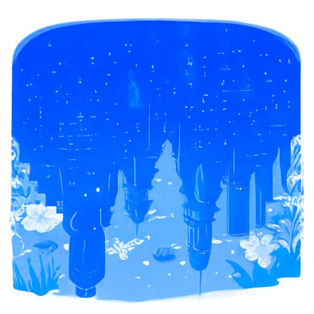
Upright: outer-space garden
Rotated 180°: futuristic city
At each step I combine the low frequencies of one prompt's CFG velocity with the high
frequencies of another's: v = lowpass(va) + vb − lowpass(vb).
The low-pass is a Gaussian blur with σ = 16 and a 265 × 265 kernel. Up close
you see the high-frequency prompt, and from far away (the small version) you see the
low-frequency one.
Close: "a watercolor painting of a field of tiny wildflowers"
Distant: "a watercolor painting of a giant teapot"
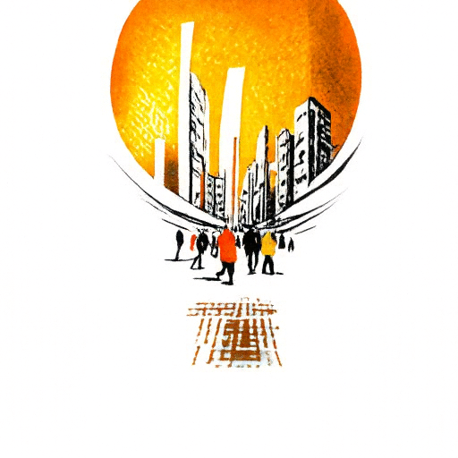
Close: "a lithograph of a bustling city street"
Distant: "a lithograph of a hot air balloon"
I built a UNet with downsampling and upsampling blocks connected by skip connections.
The denoiser learns to map a noisy image z = x + σε back to the
clean digit x. Here are MNIST digits (scaled to [0, 1]) at
σ = 0, 0.2, 0.4, 0.5, 0.6, 0.8, and 1.0.
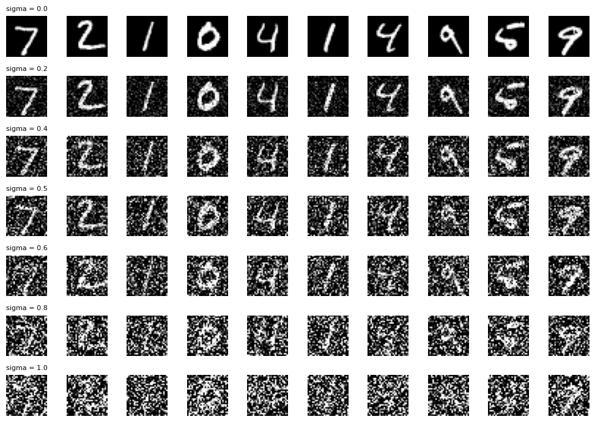
I trained a D = 128 UNet for 5 epochs at σ = 0.5, with batch size 256 and Adam (lr = 1e-4). I added fresh noise to every batch so the model never saw the same noisy image twice.
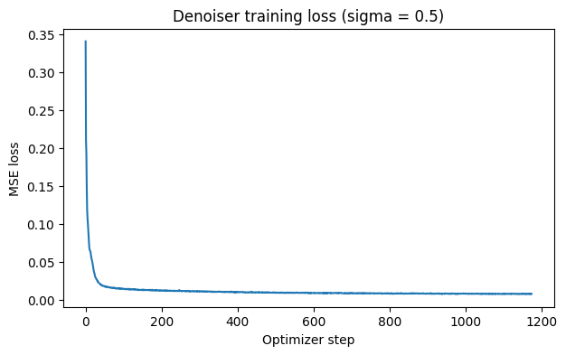
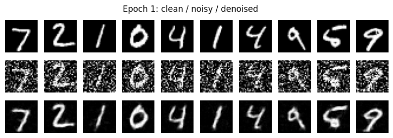
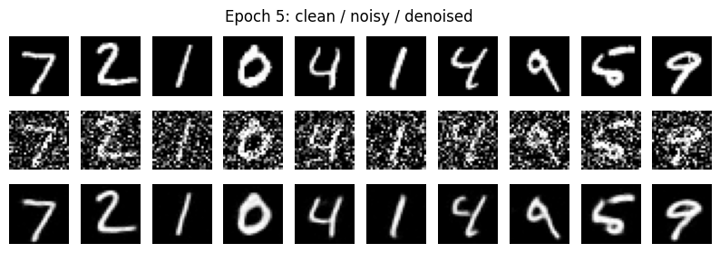
Even after 1 epoch the denoised digits look pretty close to the originals. After 5 epochs the strokes are cleaner with smoother edges.
I kept the same test digits and noise pattern and varied σ. Odd rows are noisy inputs and even rows are the denoised outputs.
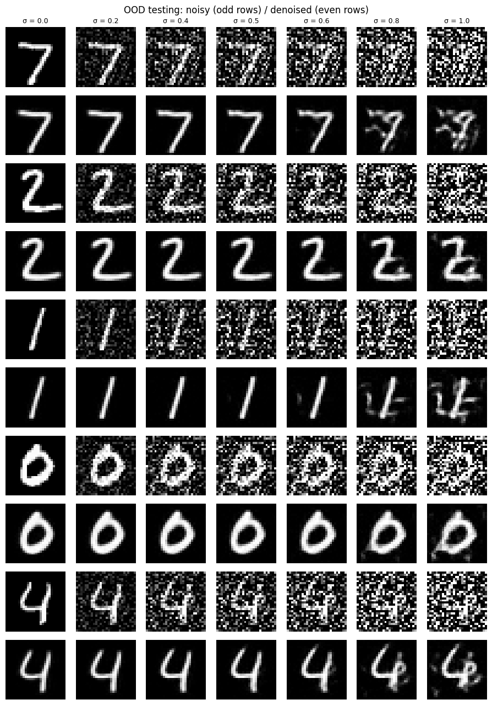
The model does well at or below σ = 0.5, but at 0.8 and 1.0 it starts adding stray strokes and making up digit shapes, since it was only trained on one noise level.
I trained a fresh model the same way, but with pure noise as the input and clean digits as the target.
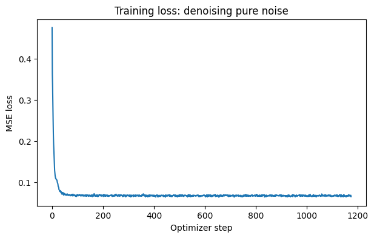
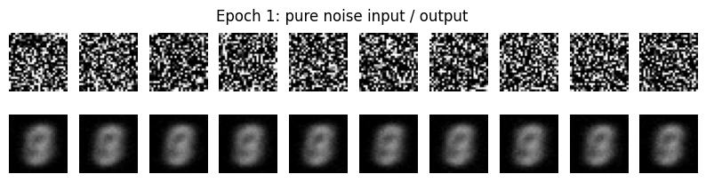
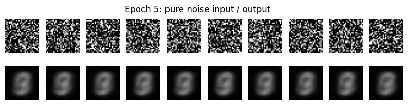
Every output is the same blurry blob that looks like a bunch of digits stacked on top of each other. Since pure noise tells the model nothing about which digit is the target, the best it can do under MSE loss is output the average of all the training digits.
I added time conditioning to a D = 64 UNet using two fully-connected blocks, and trained
it to predict the velocity x1 − x0 from
xt = (1 − t)x0 + t·x1, with a random
t for each image. I trained for 10 epochs with batch size 64 and Adam, starting at
lr = 1e-2 with exponential decay by 0.11/10 each epoch.
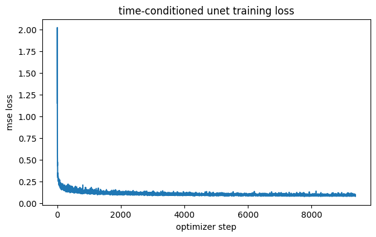
I generated 40 samples from pure noise with 50 Euler steps, using the same noise for each checkpoint.
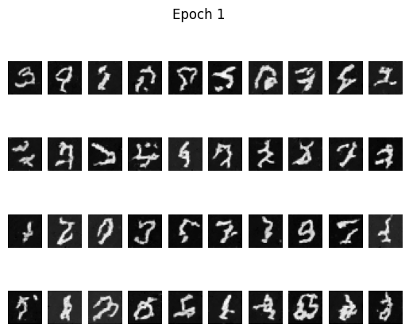
Epoch 1
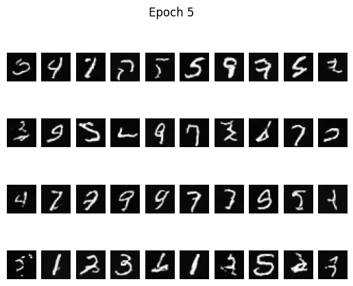
Epoch 5
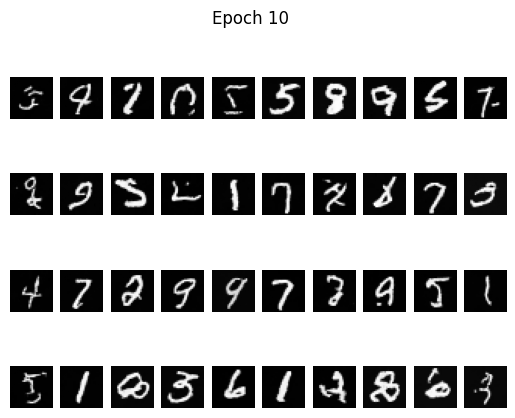
Epoch 10
The digits get clearer with more training. By epoch 10 I can pick out a lot of 1s, 5s, 7s, and 9s, but some are still squiggly blobs.
I added the digit label as a one-hot vector, passed through two more fully-connected blocks, and dropped it 10% of the time so the model also learns to generate without a class. Training used the same settings as the time-only model.
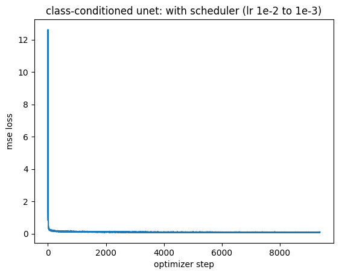
I sampled with 300 Euler steps and classifier-free guidance
u = uuncond + 5(ucond − uuncond).
Each row is digits 0–9, with four samples per digit, and I reused the same noise
across epochs.
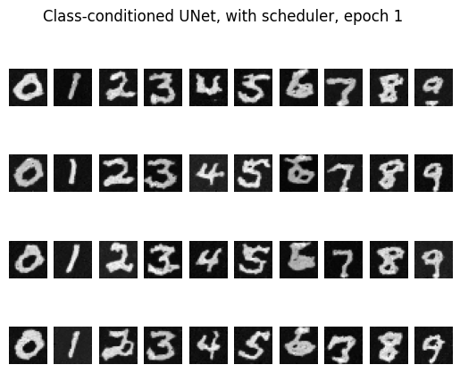
Epoch 1
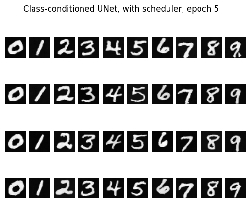
Epoch 5
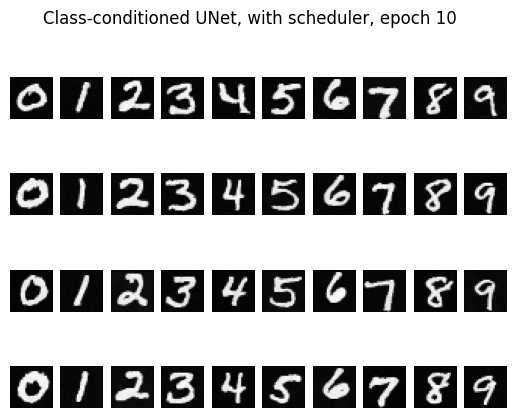
Epoch 10
Class conditioning makes a huge difference. Even after 1 epoch every sample is the right digit, and by epoch 10 they're clean and sharp.
I trained a separate model with a constant learning rate of 1e-3 instead of starting at 1e-2 and decaying it. Since 1e-3 is where the scheduler ends up, the lower rate keeps training stable without needing to decay.
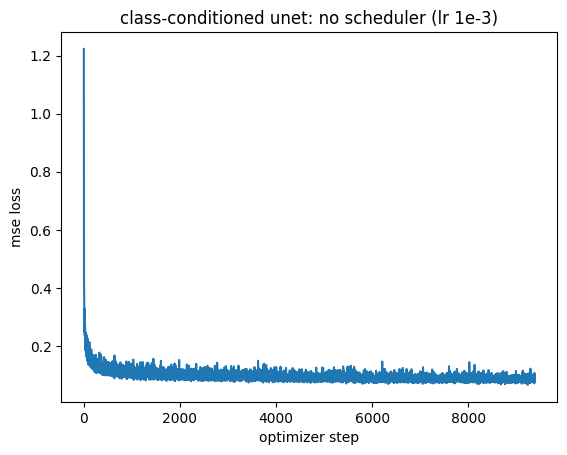
With scheduler, epoch 10
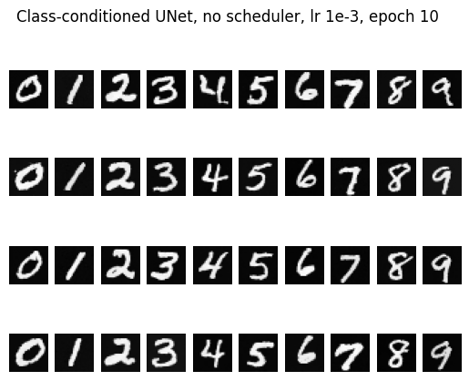
No scheduler (lr = 1e-3), epoch 10
After 10 epochs the digits look about as clear as with the scheduler. A few are slightly thinner or shakier, but overall it keeps the same performance.